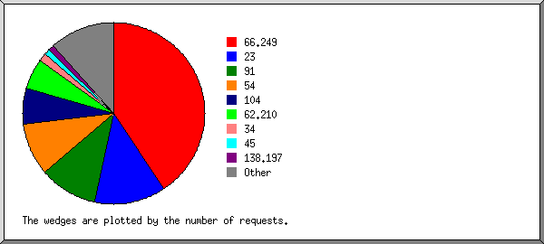
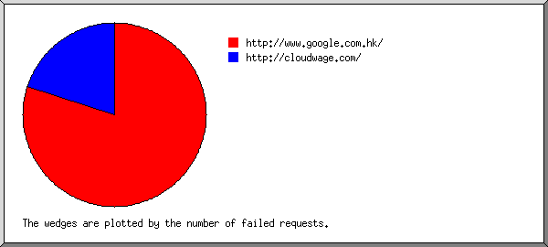
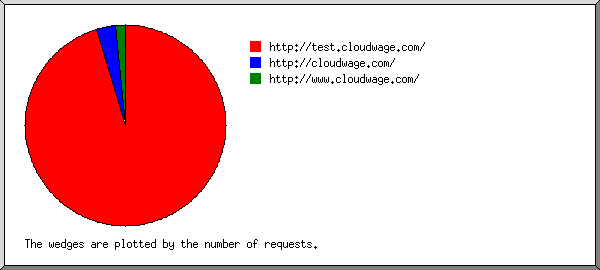
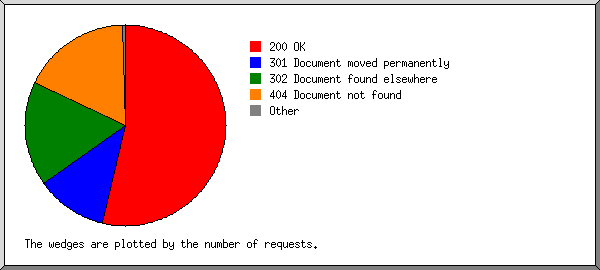
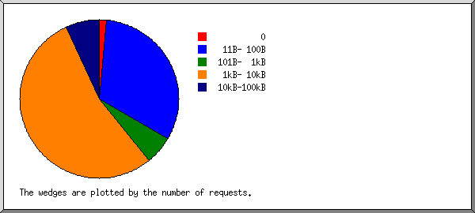
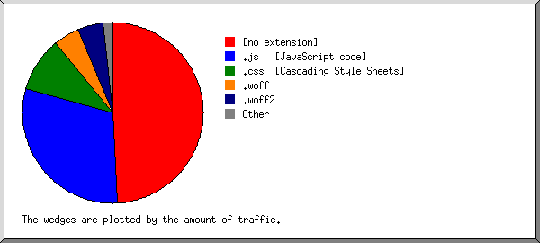
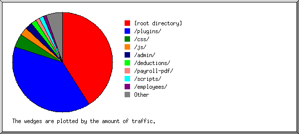
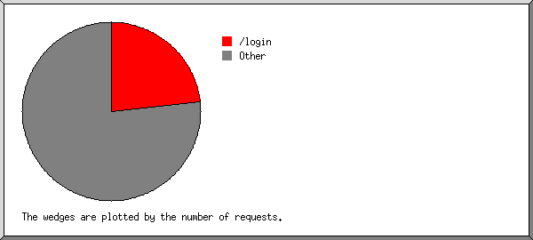

Web Server Statistics for test.cloudwage.com
Web Server Statistics for test.cloudwage.com
Program started on Sat, Apr 27 2019 at 2:05 PM.
Analyzed requests from Fri, Mar 17 2017 at 1:06 PM to Fri, Apr 26 2019 at 10:21 PM (770.39 days).
Web Server Statistics for test.cloudwage.comProgram started on Sat, Apr 27 2019 at 2:05 PM.
Analyzed requests from Fri, Mar 17 2017 at 1:06 PM to Fri, Apr 26 2019 at 10:21 PM (770.39 days).
(Go To: Top | General Summary | Monthly Report | Daily Summary | Hourly Summary | Domain Report | Organization Report | Redirected Referrer Report | Failed Referrer Report | Referring Site Report | Browser Report | Browser Summary | Operating System Report | Status Code Report | File Size Report | File Type Report | Directory Report | Request Report)
Figures in parentheses refer to the 7-day period ending Apr 27 2019 at 2:05 PM.
Successful requests: 248 (5)
Successful requests for pages: 1 (0)
Failed requests: 91 (0)
Redirected requests: 133 (0)
Distinct files requested: 136 (207)
Distinct hosts served: 68 (95)
Data transferred: 1.04 megabytes (4.50 kilobytes)
Average data transferred per day: 1.39 kilobytes (658 bytes)
(Go To: Top | General Summary | Monthly Report | Daily Summary | Hourly Summary | Domain Report | Organization Report | Redirected Referrer Report | Failed Referrer Report | Referring Site Report | Browser Report | Browser Summary | Operating System Report | Status Code Report | File Size Report | File Type Report | Directory Report | Request Report)
Each unit ( ) represents 1 request for a page.
) represents 1 request for a page.
| month | #reqs | #pages | |
|---|---|---|---|
| Mar 2017 | 121 | 1 | |
| Apr 2017 | 1 | 0 | |
| May 2017 | 2 | 0 | |
| Jun 2017 | 8 | 0 | |
| Jul 2017 | 1 | 0 | |
| Aug 2017 | 8 | 0 | |
| Sep 2017 | 1 | 0 | |
| Oct 2017 | 8 | 0 | |
| Nov 2017 | 1 | 0 | |
| Dec 2017 | 1 | 0 | |
| Jan 2018 | 8 | 0 | |
| Feb 2018 | 0 | 0 | |
| Mar 2018 | 3 | 0 | |
| Apr 2018 | 7 | 0 | |
| May 2018 | 1 | 0 | |
| Jun 2018 | 13 | 0 | |
| Jul 2018 | 4 | 0 | |
| Aug 2018 | 4 | 0 | |
| Sep 2018 | 11 | 0 | |
| Oct 2018 | 7 | 0 | |
| Nov 2018 | 9 | 0 | |
| Dec 2018 | 3 | 0 | |
| Jan 2019 | 2 | 0 | |
| Feb 2019 | 4 | 0 | |
| Mar 2019 | 4 | 0 | |
| Apr 2019 | 16 | 0 |
Busiest month: Mar 2017 (1 request for a page).
(Go To: Top | General Summary | Monthly Report | Daily Summary | Hourly Summary | Domain Report | Organization Report | Redirected Referrer Report | Failed Referrer Report | Referring Site Report | Browser Report | Browser Summary | Operating System Report | Status Code Report | File Size Report | File Type Report | Directory Report | Request Report)
Each unit () represents 1 request for a page.
| day | #reqs | #pages | |
|---|---|---|---|
| Sun | 25 | 0 | |
| Mon | 29 | 0 | |
| Tue | 14 | 0 | |
| Wed | 9 | 0 | |
| Thu | 21 | 0 | |
| Fri | 144 | 1 | |
| Sat | 6 | 0 |
(Go To: Top | General Summary | Monthly Report | Daily Summary | Hourly Summary | Domain Report | Organization Report | Redirected Referrer Report | Failed Referrer Report | Referring Site Report | Browser Report | Browser Summary | Operating System Report | Status Code Report | File Size Report | File Type Report | Directory Report | Request Report)
Each unit () represents 1 request for a page.
| hour | #reqs | #pages | |
|---|---|---|---|
| 0 | 20 | 0 | |
| 1 | 4 | 0 | |
| 2 | 25 | 0 | |
| 3 | 3 | 0 | |
| 4 | 0 | 0 | |
| 5 | 3 | 0 | |
| 6 | 4 | 0 | |
| 7 | 2 | 0 | |
| 8 | 4 | 0 | |
| 9 | 2 | 0 | |
| 10 | 1 | 0 | |
| 11 | 1 | 0 | |
| 12 | 2 | 0 | |
| 13 | 128 | 1 | |
| 14 | 6 | 0 | |
| 15 | 6 | 0 | |
| 16 | 6 | 0 | |
| 17 | 5 | 0 | |
| 18 | 4 | 0 | |
| 19 | 0 | 0 | |
| 20 | 3 | 0 | |
| 21 | 15 | 0 | |
| 22 | 2 | 0 | |
| 23 | 2 | 0 |
(Go To: Top | General Summary | Monthly Report | Daily Summary | Hourly Summary | Domain Report | Organization Report | Redirected Referrer Report | Failed Referrer Report | Referring Site Report | Browser Report | Browser Summary | Operating System Report | Status Code Report | File Size Report | File Type Report | Directory Report | Request Report)
Listing domains, sorted by the amount of traffic.
| #reqs | %bytes | domain |
|---|---|---|
| 248 | 100% | [unresolved numerical addresses] |
(Go To: Top | General Summary | Monthly Report | Daily Summary | Hourly Summary | Domain Report | Organization Report | Redirected Referrer Report | Failed Referrer Report | Referring Site Report | Browser Report | Browser Summary | Operating System Report | Status Code Report | File Size Report | File Type Report | Directory Report | Request Report)

Listing the top 20 organizations by the number of requests, sorted by the number of requests.
| #reqs | %bytes | organization |
|---|---|---|
| 113 | 66.94% | 66.249 |
| 35 | 0.84% | 23 |
| 29 | 4.27% | 91 |
| 18 | 1.92% | 104 |
| 15 | 3.50% | 54 |
| 4 | 1.99% | 34 |
| 3 | 1.12% | 45 |
| 3 | 1.84% | 138.197 |
| 2 | 1.23% | 159.203 |
| 2 | 1.23% | 122 |
| 2 | 0.61% | 178.62 |
| 2 | 1.24% | 165.227 |
| 2 | 2.02% | 142.93 |
| 2 | 2.67% | 176.53 |
| 2 | 1.23% | 159.65 |
| 1 | 0.43% | 13 |
| 1 | 0.55% | 195.181 |
| 1 | 0.55% | 178.162 |
| 1 | 0.43% | 52 |
| 1 | 0.61% | 95 |
| 9 | 4.79% | [not listed: 9 organizations] |
(Go To: Top | General Summary | Monthly Report | Daily Summary | Hourly Summary | Domain Report | Organization Report | Redirected Referrer Report | Failed Referrer Report | Referring Site Report | Browser Report | Browser Summary | Operating System Report | Status Code Report | File Size Report | File Type Report | Directory Report | Request Report)

Listing referring URLs, sorted by the number of redirected requests.
(Go To: Top | General Summary | Monthly Report | Daily Summary | Hourly Summary | Domain Report | Organization Report | Redirected Referrer Report | Failed Referrer Report | Referring Site Report | Browser Report | Browser Summary | Operating System Report | Status Code Report | File Size Report | File Type Report | Directory Report | Request Report)

Listing referring URLs, sorted by the number of failed requests.
| #reqs | URL |
|---|---|
| 4 | http://www.google.com.hk/ |
| 1 | http://cloudwage.com/ |
(Go To: Top | General Summary | Monthly Report | Daily Summary | Hourly Summary | Domain Report | Organization Report | Redirected Referrer Report | Failed Referrer Report | Referring Site Report | Browser Report | Browser Summary | Operating System Report | Status Code Report | File Size Report | File Type Report | Directory Report | Request Report)

Listing referring sites, sorted by the number of requests.
| #reqs | site |
|---|---|
| 124 | http://test.cloudwage.com/ |
| 4 | http://cloudwage.com/ |
(Go To: Top | General Summary | Monthly Report | Daily Summary | Hourly Summary | Domain Report | Organization Report | Redirected Referrer Report | Failed Referrer Report | Referring Site Report | Browser Report | Browser Summary | Operating System Report | Status Code Report | File Size Report | File Type Report | Directory Report | Request Report)
Listing browsers with at least 1 request for a page, sorted by the number of requests for pages.
| #reqs | #pages | browser |
|---|---|---|
| 113 | 1 | Mozilla/5.0 (X11; Linux x86_64) AppleWebKit/537.36 (KHTML, like Gecko) Chrome/57.0.2987.98 Safari/537.36 |
| 135 | 0 | [not listed: 21 browsers] |
(Go To: Top | General Summary | Monthly Report | Daily Summary | Hourly Summary | Domain Report | Organization Report | Redirected Referrer Report | Failed Referrer Report | Referring Site Report | Browser Report | Browser Summary | Operating System Report | Status Code Report | File Size Report | File Type Report | Directory Report | Request Report)
Listing browsers with at least 1 request for a page, sorted by the number of requests for pages.
| # | #reqs | #pages | browser |
|---|---|---|---|
| 1 | 145 | 1 | Safari |
| 141 | 1 | Safari/537 | |
| 103 | 0 | [not listed: 8 browsers] |
(Go To: Top | General Summary | Monthly Report | Daily Summary | Hourly Summary | Domain Report | Organization Report | Redirected Referrer Report | Failed Referrer Report | Referring Site Report | Browser Report | Browser Summary | Operating System Report | Status Code Report | File Size Report | File Type Report | Directory Report | Request Report)
Listing operating systems, sorted by the number of requests for pages.
| # | #reqs | #pages | OS |
|---|---|---|---|
| 1 | 124 | 1 | Unix |
| 124 | 1 | Linux | |
| 2 | 10 | 0 | Known robots |
| 3 | 90 | 0 | OS unknown |
| 4 | 5 | 0 | Macintosh |
| 5 | 19 | 0 | Windows |
| 5 | 0 | Windows NT | |
| 14 | 0 | Unknown Windows |
(Go To: Top | General Summary | Monthly Report | Daily Summary | Hourly Summary | Domain Report | Organization Report | Redirected Referrer Report | Failed Referrer Report | Referring Site Report | Browser Report | Browser Summary | Operating System Report | Status Code Report | File Size Report | File Type Report | Directory Report | Request Report)

Listing status codes, sorted numerically.
| #reqs | status code |
|---|---|
| 248 | 200 OK |
| 51 | 301 Document moved permanently |
| 82 | 302 Document found elsewhere |
| 89 | 404 Document not found |
| 2 | 500 Internal server error |
(Go To: Top | General Summary | Monthly Report | Daily Summary | Hourly Summary | Domain Report | Organization Report | Redirected Referrer Report | Failed Referrer Report | Referring Site Report | Browser Report | Browser Summary | Operating System Report | Status Code Report | File Size Report | File Type Report | Directory Report | Request Report)

| size | #reqs | %bytes |
|---|---|---|
| 0 | 4 | |
| 1B- 10B | 0 | |
| 11B- 100B | 80 | 0.48% |
| 101B- 1kB | 15 | 0.78% |
| 1kB- 10kB | 133 | 56.76% |
| 10kB-100kB | 16 | 41.99% |
(Go To: Top | General Summary | Monthly Report | Daily Summary | Hourly Summary | Domain Report | Organization Report | Redirected Referrer Report | Failed Referrer Report | Referring Site Report | Browser Report | Browser Summary | Operating System Report | Status Code Report | File Size Report | File Type Report | Directory Report | Request Report)

Listing extensions with at least 0.1% of the traffic, sorted by the amount of traffic.
| #reqs | %bytes | extension |
|---|---|---|
| 104 | 51.56% | [no extension] |
| 28 | 24.81% | .js [JavaScript code] |
| 24 | 11.13% | .css [Cascading Style Sheets] |
| 1 | 5.43% | .woff |
| 1 | 5.20% | .woff2 |
| 6 | 0.88% | .png [PNG graphics] |
| 80 | 0.48% | .txt [Plain text] |
| 1 | 0.38% | [directories] |
| 1 | 0.14% | .jpg [JPEG graphics] |
| 2 | [not listed: 1 extension] |
(Go To: Top | General Summary | Monthly Report | Daily Summary | Hourly Summary | Domain Report | Organization Report | Redirected Referrer Report | Failed Referrer Report | Referring Site Report | Browser Report | Browser Summary | Operating System Report | Status Code Report | File Size Report | File Type Report | Directory Report | Request Report)

Listing directories with at least 0.01% of the traffic, sorted by the amount of traffic.
| #reqs | %bytes | directory |
|---|---|---|
| 111 | 42.41% | [root directory] |
| 40 | 36.13% | /plugins/ |
| 4 | 5.00% | /css/ |
| 2 | 2.97% | /js/ |
| 11 | 2.06% | /admin/ |
| 4 | 1.87% | /deductions/ |
| 1 | 1.63% | /payroll-pdf/ |
| 2 | 1.24% | /employees/ |
| 3 | 1.04% | /payroll/ |
| 1 | 0.76% | /scripts/ |
| 1 | 0.65% | /grades/ |
| 1 | 0.63% | /allowances/ |
| 2 | 0.53% | /img/ |
| 1 | 0.46% | /shifts/ |
| 1 | 0.45% | /payment-methods/ |
| 1 | 0.45% | /policies/ |
| 56 | 0.38% | /.well-known/ |
| 1 | 0.37% | /work-plans/ |
| 1 | 0.34% | /payment-structures/ |
| 1 | 0.34% | /employee-types/ |
| 1 | 0.14% | /images/ |
| 2 | 0.13% | /departments/ |
(Go To: Top | General Summary | Monthly Report | Daily Summary | Hourly Summary | Domain Report | Organization Report | Redirected Referrer Report | Failed Referrer Report | Referring Site Report | Browser Report | Browser Summary | Operating System Report | Status Code Report | File Size Report | File Type Report | Directory Report | Request Report)

Listing files with at least 20 requests, sorted by the number of requests.
| #reqs | %bytes | last time | file |
|---|---|---|---|
| 58 | 33.05% | Apr/24/19 6:32 AM | /login |
| 190 | 66.95% | Apr/26/19 10:21 PM | [not listed: 133 files] |